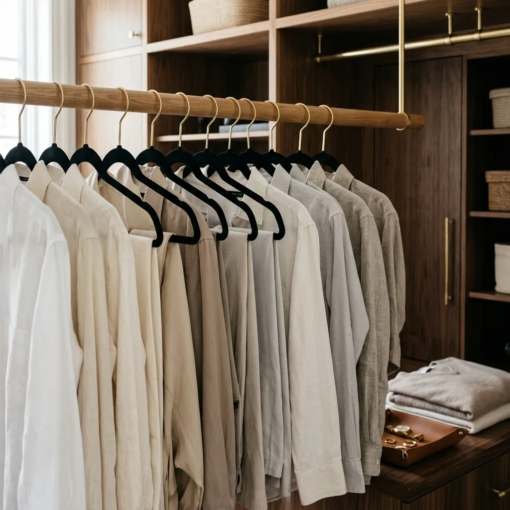
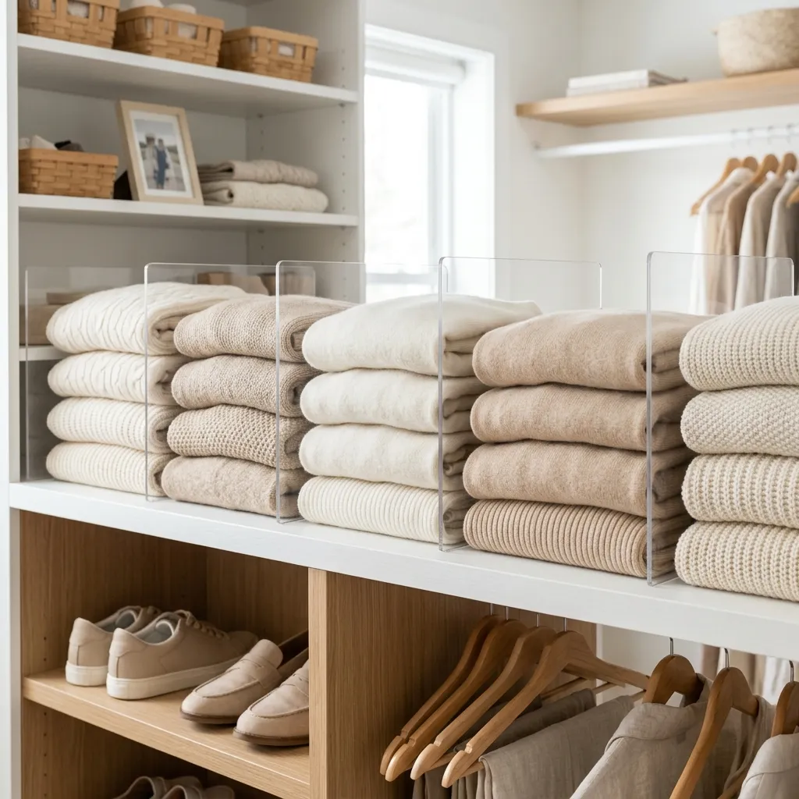
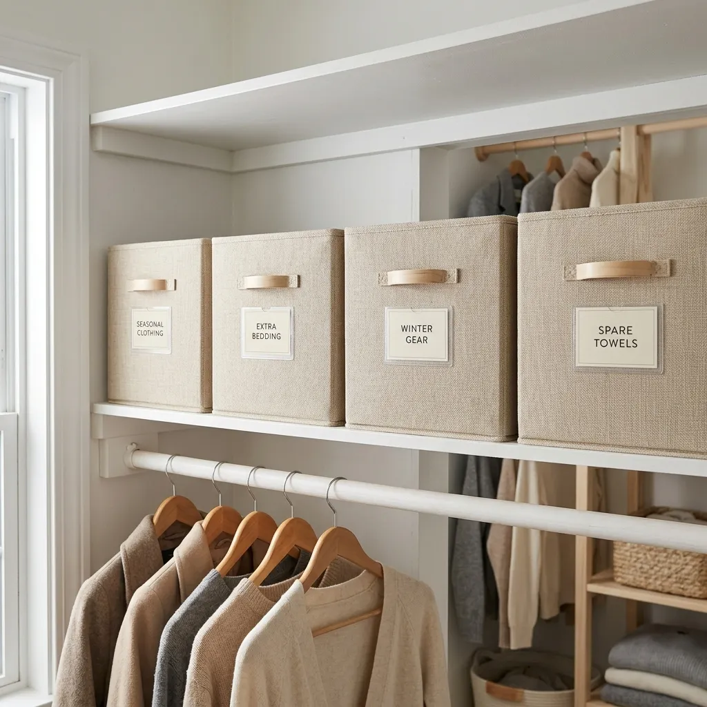
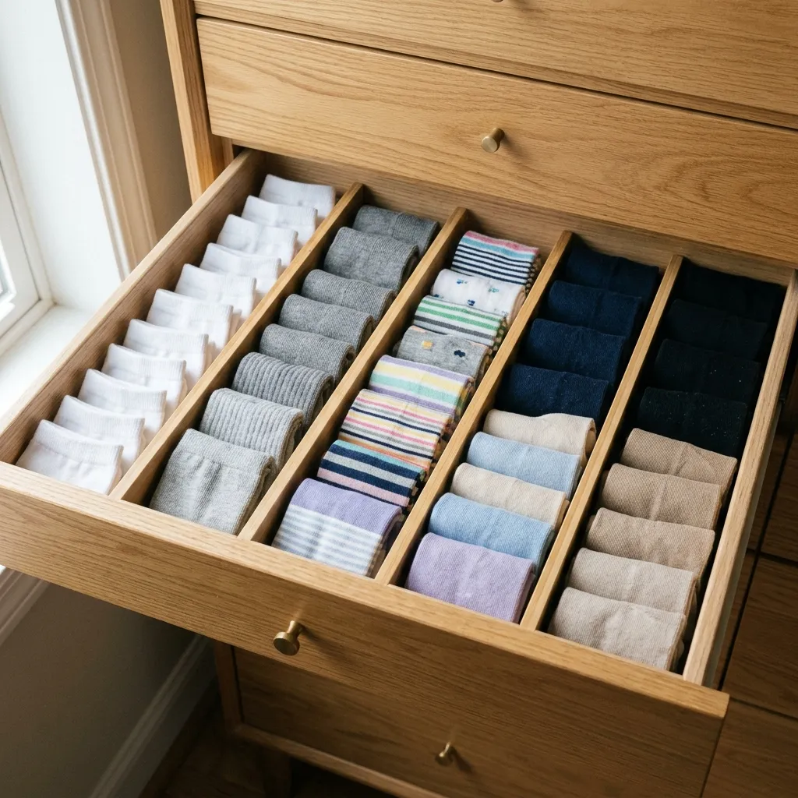
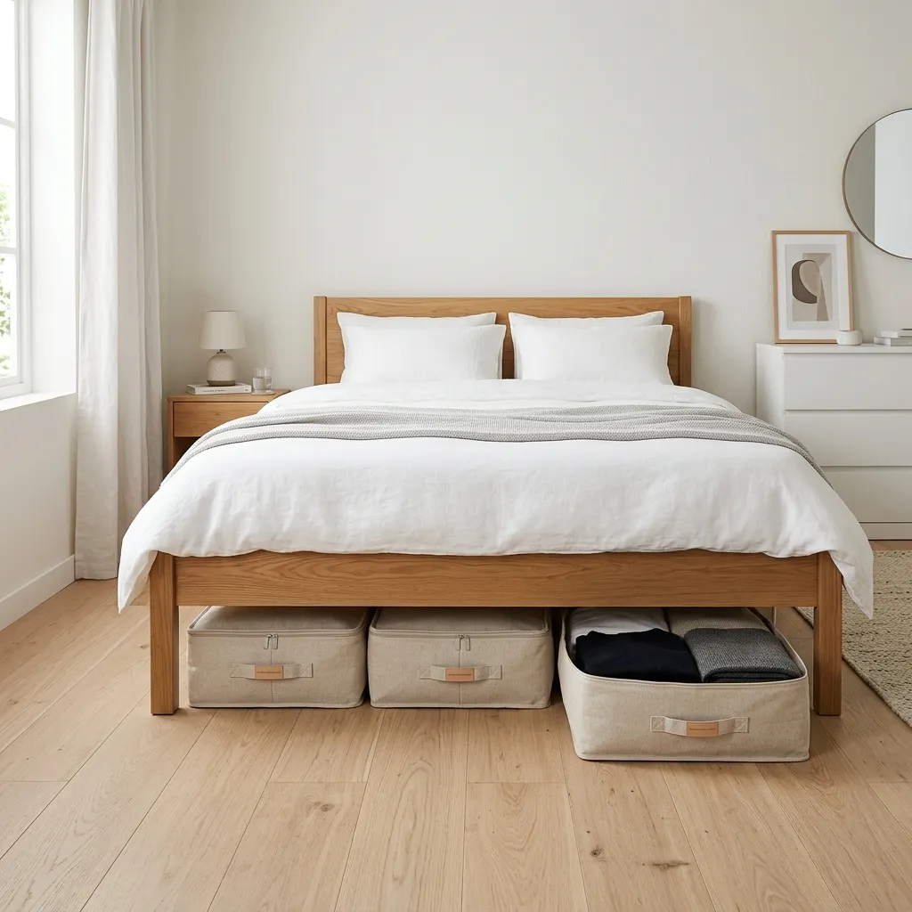

How to Declutter Your Closet Minimalist Style: 10 Step Capsule Wardrobe Hacks
Drowning in clothes but feel like you have absolutely nothing to wear? Discover step-by-step how to declutter your closet minimalist style, conquer decision fatigue, build a timeless capsule wardrobe, and create an aesthetic bedroom sanctuary.
Let’s be brutally honest for a second. How many times have you opened a closet bursting at the seams with clothes, stared blankly into the overflowing hangers, and said out loud with genuine frustration: “I have absolutely nothing to wear”?
If you are nodding your head right now, know this: you are not alone. It is the defining wardrobe paradox of modern life. We own more clothing, shoes, and accessories than any generation before us, yet getting dressed in the morning feels like solving a high-stakes puzzle before our first cup of coffee.
The secret is simple: **the problem isn't that you don't have enough clothes.** The problem is that your closet has turned into a museum of past identities, impulse purchases, and "someday" outfits that no longer serve who you are today. When every hanger is crammed together, getting dressed creates friction instead of joy.
"A cluttered closet isn't just physical noise; it's emotional weight. When you streamline your wardrobe, you clear mental space for what truly matters."
Imagine opening your wardrobe doors every morning to see a beautifully curated boutique where **every single piece fits you comfortably, flatters your body, and coordinates effortlessly with everything else.** That is the calm, empowering magic of minimalist closet decluttering. Whether you live in a compact apartment or a spacious home, this ultimate step-by-step guide will walk you through transforming your closet forever.

Phase 1: The Mindset Shift & Emotional Preparation
Before you pull a single garment off a hanger, we must address the real elephant in the room: **decluttering a closet is rarely a physical challenge; it is almost entirely emotional.**
Our clothing is tied to memories, milestones, financial investments, and future aspirations. You aren't just holding onto an unworn pair of jeans; you might be clinging to the memory of who you were five years ago, or holding out hope for a body type that doesn't represent your present self. To succeed with minimalist decluttering, adopt these 3 freeing mental principles:
- Release the Sunk Cost Guilt: The money spent on that expensive tag-still-on dress is already gone. Keeping it in your closet as a daily guilt-trip won't put dollars back in your bank account. Let it go.
- Honor Your Present Body: Dress the body you have right now today with respect and comfort. You deserve to open your closet and feel amazing in what fits current life.
- Match Your Real Lifestyle: If you work remotely or spend weekends outdoors, but 70% of your closet is formal eveningwear, there is a mismatch between your fantasy self and your real, everyday happiness.
Phase 2: The "Clean Slate Purge" Method
Shuffling hangers back and forth while browsing your closet does not work. True minimalist organization requires starting with a completely empty canvas. We call this the **Clean Slate Purge**.
Step 1: Empty the Entire Closet
Take every single piece of clothing out of your wardrobe. Yes, everything! Pull down dresses, remove jackets, unhook trousers, and pull out shoes hiding in dark corners. Pile them all onto your bed or a clean rug. Your closet should be completely, echoing empty.
Step 2: Deep Clean the Interior
With the space cleared, take 10 minutes to wipe down wood shelving, vacuum closet floors, wipe down hanging rods, and let fresh air circulate. Similar to how we structure minimalist small room layouts, clearing visual clutter gives you instant spatial clarity.
Phase 3: The 4-Pile Sorting System
Now, standing before the mountain of clothes on your bed, pick up every single item one by one. Do not linger or overthink. Make a swift decision and place the garment into one of these four defined piles:
- Pile 1: The "Absolute Love" (Keep): Items you wear regularly, that fit comfortably, feel flattering, and align with your signature aesthetic.
- Pile 2: The "Rehome" (Donate / Sell): Pieces in good condition that no longer fit your lifestyle or body. Sell them on Poshmark/ThredUp or donate them to local shelters.
- Pile 3: The "Purgatory Box" (Maybe): The secret weapon for indecisive declutterers! If you're torn on an item, pack it into a closed box and store it under your bed. If you don't retrieve it within 90 days, donate the box unopened.
- Pile 4: The "Recycle" (Trash/Rags): Stained, damaged, or severely worn items that are past their wearable life. Recycle through textile bins.
THE 90/90 MINIMALIST RULE
When evaluating a borderline piece, ask yourself: Have I worn this in the past 90 days? Will I wear it in the next 90 days? If the answer to both is no, it doesn't deserve prime real estate in your daily sanctuary.
Phase 4: Building a 2026 Capsule Wardrobe
Once you are left with only your "Absolute Love" pile, it is time to build a cohesive **Capsule Wardrobe**. A capsule wardrobe isn't about extreme deprivation—it is about curated versatility.
By curating a collection of high-quality essentials in harmonious color palettes, you can create dozens of outfits from just 30 to 35 core pieces. Here is the ideal ratio for a timeless home & work minimalist wardrobe:
- 6-8 Core Tops: High-grade organic cotton tees, classic button-downs, and fine knit sweaters in neutral tones (white, beige, taupe, black).
- 4-5 Tailored Bottoms: Dark-wash straight jeans, relaxed linen trousers, and tailored minimalist trousers.
- 3-4 Versatile Layering Pieces: An oversized blazer, a trench coat, and a cozy neutral cardigan.
- 3-4 Shoes: Minimalist leather sneakers, classic loafers, and sleek ankle boots.
- 2-3 Everyday Accessories: A structured leather tote, subtle gold or silver jewellery, and a neutral wool scarf.
If you enjoy pairing minimalist style with functional home aesthetics, check out our guide on styling minimalist bookshelves without clutter for matching design principles.
Phase 5: Aesthetic Organization & Storage Hacks (Shop The Look)
Now that your collection is streamlined, how you organize your clothes determines how easily you will maintain your closet long-term. Aesthetic organization reduces visual chaos and protects your fabrics.
01 - The Visual Unifier: Slim Velvet Hangers
Mismatched plastic, wire, and bulky wooden hangers create instant visual noise. Replacing all hangers with slim, non-slip velvet hangers instantly transforms your closet into a luxury boutique while saving up to 30% of horizontal hanging space.

Recommended Product: Velvet Non-Slip Hangers Matching Set →
02 - Vertical Sweater Stacks: Clear Acrylic Shelf Dividers
Avoid towering stacks of folded knits that collapse whenever you pull out a bottom sweater. Clear acrylic shelf dividers hold stacked sweaters and handbags in clean vertical columns without visual bulk.

Recommended Product: Clear Acrylic Shelf Dividers Set →
03 - Hidden Containment: Neutral Fabric Storage Bins
Small items like swimwear, scarves, or workout accessories look messy on open shelves. Store these out of sight in matching linen or canvas fabric bins for a seamless, calming aesthetic.

Recommended Product: Fabric Storage Bins with Labels (Neutral Tones) →
04 - Taming Underwear & Socks: Bamboo Drawer Dividers
Dressers often become chaos central. Spring-loaded bamboo dividers create dedicated rows for socks, undergarments, and belts, ensuring everything stays neatly rolled and easily visible.

Recommended Product: Bamboo Spring-Loaded Drawer Dividers →
05 - Out-of-Season Rotation: Underbed Storage Bags
Seeing heavy winter coats in the middle of summer creates unnecessary visual clutter. Store off-season garments in low-profile, breathable underbed storage bags to keep your main wardrobe 100% current.

Recommended Product: Low-Profile Breathable Underbed Storage Bags →
Phase 6: The "One-In, One-Out" Maintenance Rule
Congratulations! You now own a streamlined, beautiful, highly functional minimalist wardrobe. Opening your closet feels like taking a fresh breath of air.
To keep your space looking like a luxury boutique long into the future, enforce the golden rule of decluttering: **The One-In, One-Out Rule.**
Whenever you purchase a new shirt, pair of shoes, or jacket, an existing piece must leave your closet via donation or sale. This simple boundary prevents slow accumulation, keeps your wardrobe in perfect equilibrium, and ensures you only buy items you truly adore.
For more home decluttering inspiration, take a look at our 30-Day Minimalist Home Decluttering Challenge to transform every room in your home!
Frequently Asked Questions
How many clothes should be in a minimalist closet?
A standard minimalist capsule wardrobe typically contains between 30 to 40 core pieces per season (tops, bottoms, dresses, outerwear, shoes). Intimate apparel, lounge wear, and workout gear are kept separately and not counted in the core number.
What is the 90/90 decluttering rule?
The 90/90 rule asks: Have you worn this item in the last 90 days? If not, will you wear it in the next 90 days? If the answer to both questions is no, the item should be donated, sold, or recycled.
What do I do with expensive clothes I never wear?
Recognize the sunk cost fallacy. Holding onto an unworn $200 jacket only brings daily guilt. Reclaim your mental peace by selling it on consignment apps like Poshmark or gifting it to a friend who will love wearing it.
How do I start decluttering my closet when overwhelmed?
Start small with micro-decluttering! Instead of emptying your entire closet at once, focus on a single small category per day—such as purging just your sock drawer, your shoe rack, or your t-shirts. Small wins build momentum.
How often should I declutter my wardrobe?
A seasonal check-in (4 times per year) is ideal. When rotating your wardrobe for spring/summer or fall/winter, take 30 minutes to review what you didn't wear during the outgoing season and donate those pieces.